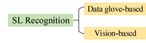
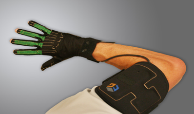
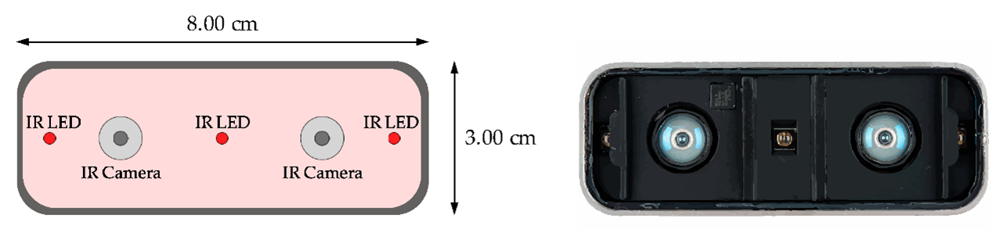
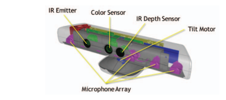
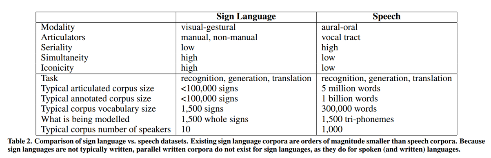

Sign Language Technology (SLT) development must acknowledge the complexity of all 300 sign languages and ought to benefit Deaf culture and their community.
According to Zheng et at. (2021), Sign Language (SL) has its own language structure and, therefore, cannot be directly translated word-for-word into spoken language. For many SL speakers, spoken language is a second or third language. This presents a barrier because SL speakers may not understand the structure of spoken or written language when communication is needed most.
Two main Sign Language Recognition (SLR) methods are available:
| • Data glove-based
• Vision-based |
 |
|---|
Data glove-based
Yang & Zhu (2019) state that early image processing speeds were limited by computational power; therefore, data glove-based SLR was used. The accuracy of commercial gloves is highly dependent on the glove’s fit to the user’s hand. Hand sizes vary hugely amongst signers based on gender, age, and genetic factors. However, most commercial gloves are only available in one size. Commercial gloves are bulky and inconvenient to carry around, which affects the experience of Human-Computer Interaction.
CyberGlove was designed explicitly for ASL recognition. Two models of CyberGlove are available. One model is equipped with 18 resistive bend sensors, and the other with 22 resistive bend sensors to measure finger and wrist motions. Both models have four finger abduction sensors and sensors measuring palm arch, wrist flexion, and wrist abduction. The main disadvantage of the CyberGlove method is cost; a single glove ranges from $13,000 to $18,000 (USD), depending on the model. Since SL relies on visible cues from hands, eyes, body movement and facial expressions to communicate, Data glove-based SLR is not the best option in SLT because it is not easy to distinguish between signs.

Vision-based
Vision-based systems are more intuitive because they consider a signer’s visual cues.
The Leap Motion controller contains two infrared cameras and three infrared LEDs. It is a small
USB device that allows users to control their computers or tablets with hand gestures. The 3D
non-contact motion sensor detects and tracks hands, fingers, and finger-like objects in
real-time, reporting discrete position and motion.

Microsoft Kinect was initially made for games on the Xbox and was adapted to be able to interpret Sign Language. It has a depth sensor that detects and tracks the 3D coordinates of over 20 human joints and an RGB colour sensor. Coloured gloves are needed to construct a 3-D representation of the hands. Azure Kinect DK is a developer kit with advanced AI sensors for computer vision, and speech models have recently been released. Kinect contains a depth sensor, a spatial microphone array with a video camera, and an orientation sensor. It requires using the cloud and Microsoft systems, which are proprietary to them. This makes it hard for the user to access.

In the long-term hardware-based solutions may have potential as sensor technology and components are made more portable and less expensive. However, currently it is not viable for many users.
Machine Learning (ML) requires vast data to translate sign language in real-time. Current SL datasets are too small, with approximately 100-2000 signs (Bragg et al., 2019) compared to millions in spoken datasets

Moreover, current datasets are generally not representative of the real world as datasets are usually collected in a controlled environment with fixed lighting, usually with translators or novices contributing using still photos and/or short videos. Datasets are typically small due to privacy concerns which result in poor translation. Translators or novices are not native speakers resulting in simplifying the style or vocabulary and signing slowly. However, according to Saunders et al. (2021), anonymising sign language datasets has increased the willingness of people to contribute to datasets due to the removal of signer-specific appearance. When contributing to datasets, their appearance is altered so contributors remain anonymous. To accurately reflect the signing population and realistic scenarios, datasets should include signers that vary by gender, age, clothing, geography, culture, skin tone, body proportions, disability, fluency, background scenery, lighting conditions, camera quality, and camera angles. Videos containing complete sentences and/or questions and the dynamic features of Sign Language should be added to datasets rather than still photos or short videos.
SLT is available in larger countries such as the United States of America (500, 000 deaf people) and the United Kingdom (151,000 BSL users at home and 87,000 of these are Deaf), where datasets are significantly larger, funding is considerably higher for in-depth research, and there is more demand. However, it is currently unavailable in NZ as the intended users’ demand for SLT is significantly reduced, with only 23 000 speakers of NZSL. Due to this, there is currently no NZSL dataset that can be used with current SLT models.
Jam3.Monks collaborated with NEP in Japan to create a virtual human named Kiki, capable of Sign Language Interpretation and Translation. The application converts text into 3 different sign languages: Japanese, American, and International Sign Language. The application’s first use case is to broadcast emergency messaging to the public, but there are possibilities for Kiki to be able to interpret and translate on a watch and a phone which makes translation portable. Jam3 states on social media that they want to be available to a global audience however, smaller markets such as New Zealand have been excluded due to their lack of demand and interest.
Made 16 June 2023